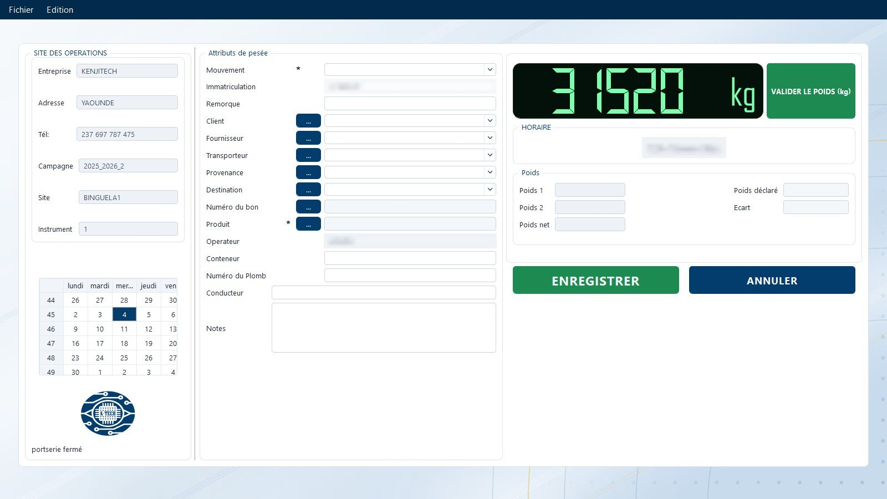
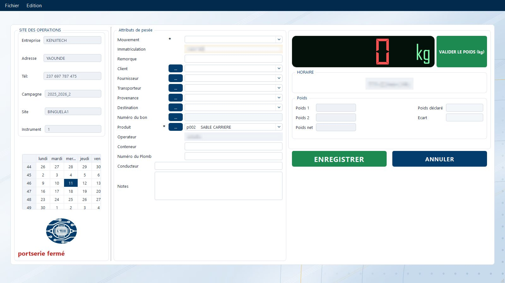
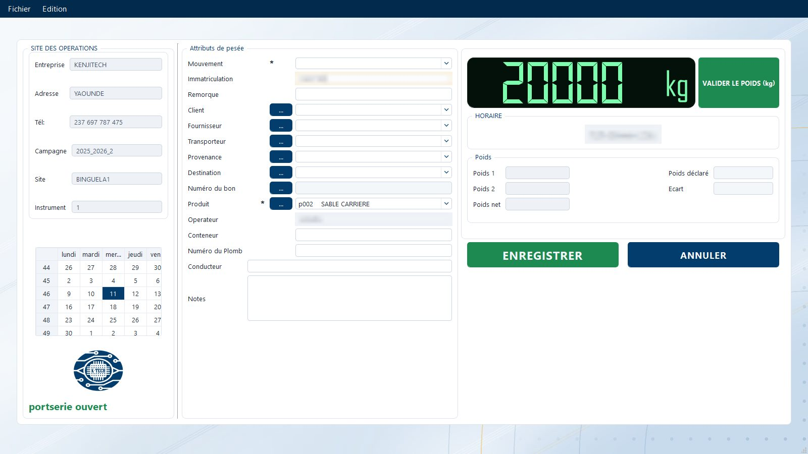
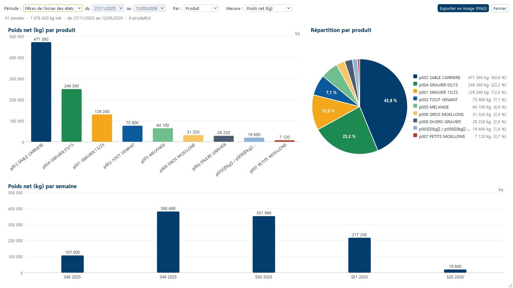
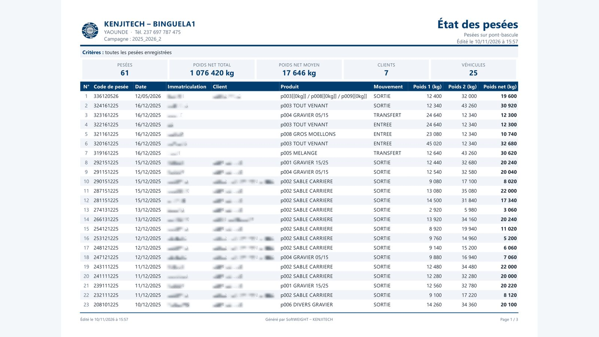
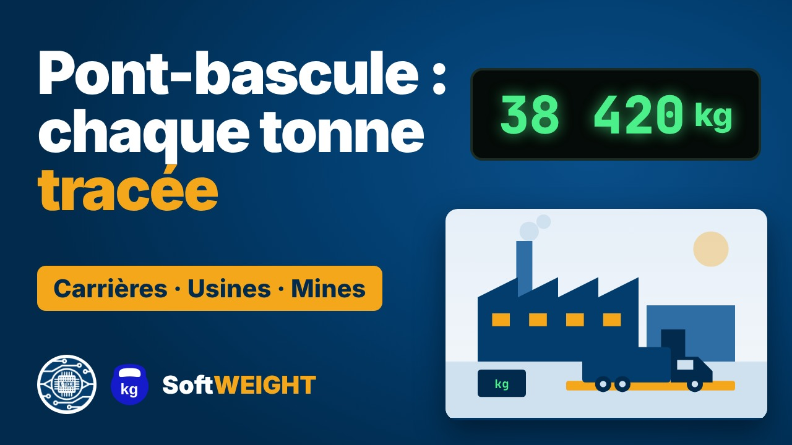
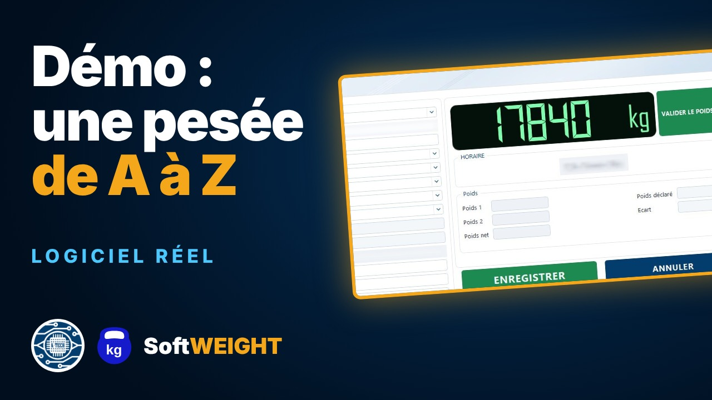

KENJITECH › SoftWEIGHT › Pont-bascule
Logiciel de pont-bascule
SoftWEIGHT pilote vos ponts-bascules de A à Z : identification du camion, pesée en entrée et en sortie, calcul automatique du poids net, ticket avec QR code, ouverture de la barrière et envoi des données vers le cloud. Conçu au Cameroun par KENJITECH, c'est le logiciel de pesage leader en Afrique centrale.
Une pesée sur pont-bascule
Sans ressaisie, du portail au cloud
Chaque pesée garde son camion, son produit, son client, son transporteur, son opérateur, sa date et son heure. Le poids est verrouillé dès qu'il est stable : il ne peut plus être modifié.
- IdentificationLa caméra LAPI lit la plaque du camion. Le feu est rouge, la barrière fermée.
- Pesée stableSoftWEIGHT lit l'indicateur, attend la stabilité et verrouille le poids.
- TicketLe ticket s'imprime en A4, A5 ou 80 mm avec son QR de vérification. Feu vert, la barrière se lève.
- SynchronisationLa pesée part vers le serveur en ligne : la direction la voit en temps réel, où qu'elle soit.
Captures d'écran réelles
Le logiciel de pont-bascule en images
SoftWEIGHT en fonctionnement sur un pont-bascule : pesée des camions de 8 260 kg à 54 600 kg, deuxième pesée, pesées en attente et états. Les noms des clients et les immatriculations sont masqués.











Voir toutes les captures du logiciel de pont-bascule →
Le logiciel de pont-bascule en vidéo

2:29Logiciel de pont-basculeCarrières, cimenteries, usines, mines, transporteurs : sur un pont-bascule, chaque tonne pesée est une tonne facturée, ou une tonne perdue.
1:51Démonstration du logicielSoftWEIGHT en conditions réelles, écran par écran : une pesée de camion sur pont-bascule, puis un lot de sacs, de l'arrivée jusqu'aux rapports, au stock et à la facturation.Fonctions pont-bascule
Tout ce qu'un pont-bascule demande
Entrée, sortie, poids net
Double pesée avec calcul automatique du poids net, tares enregistrées, pesée simple ou en deux temps. Un camion peut entrer sur un pont et sortir sur un autre.
Tous les indicateurs du marché
Mettler Toledo, Precia Molen, Dini Argeo, Bilanciai, Avery Weigh-Tronix et toutes les autres marques, en RS232, RS422, RS485, USB, Bluetooth, TCP/IP Ethernet et Wi-Fi, Modbus. Voir la liste
Poids lu en vert, non lu en rouge
L'afficheur passe au vert quand SoftWEIGHT lit l'indicateur et au rouge à 0 quand il ne reçoit rien : câble débranché ou indicateur éteint se voient tout de suite. Une pesée datée avant la dernière pesée est refusée.
Graphes, Excel et PDF
Indicateurs du nombre de pesées qui suivent vos tris, histogrammes et camemberts par client, produit et fournisseur, export Excel mis en forme et PDF paysage avec synthèse.
Prêt en quelques minutes
Un seul installateur pour le poste serveur ou client, base de données incluse, sauvegarde automatique chaque nuit, essai gratuit de 7 jours, licence liée à l'ordinateur.
Feux, barrières, caméras
Pilotage des feux, barrières, barrières optiques et capteurs, enregistrement des images des caméras et lecture des plaques par caméra LAPI.
Facturation et ERP
Facturation des pesées, gestion comptable selon votre activité, interface avec Sage, SAP et les autres ERP.
Internet coupé, pesées continues
Le site travaille en réseau local. Au retour de la connexion, tout se synchronise automatiquement vers le serveur en ligne.
VGM SOLAS
Pesée du conteneur plein sur pont-bascule (méthode 1 SOLAS) et document VGM avec signataire habilité. En savoir plus
Les versions
Un pont ou dix
SoftWEIGHT démarre sur un seul pont-bascule et un seul poste, puis évolue sans changer de logiciel ni perdre l'historique.
- Monoposte local : un pont, un ordinateur, une base de données locale.
- Multiposte : des postes de consultation pour la direction, la comptabilité ou la logistique.
- Multipont : plusieurs ponts-bascules, pèse-essieux, ensacheuses ou pèse-palettes dans une base centrale sur le réseau local.
- Option web : consultation et traitements depuis n'importe où dans le monde, plusieurs sites consolidés.
Références
Ils pèsent avec SoftWEIGHT
Carrières, usines, ports, mines, bois, BTP, agro-industrie : plus de 100 licences du logiciel SoftWEIGHT et plus de 10 millions de pesées enregistrées.
Questions fréquentes
Vos questions
Quel logiciel choisir pour un pont-bascule au Cameroun ?
SoftWEIGHT, conçu au Cameroun par KENJITECH, est le logiciel de pesage leader en Afrique centrale. Il gère la pesée entrée et sortie, les tickets, la facturation, les feux, barrières et caméras, et continue de fonctionner quand Internet coupe.
SoftWEIGHT fonctionne-t-il avec mon indicateur de pesage ?
SoftWEIGHT est compatible avec tous les indicateurs de pesage du marché, quelle que soit leur marque ou leur origine (Mettler Toledo, Arpège Master K, Precia Molen, A12E, Dini Argeo, Bilanciai, Laumas, SIPI, Epelsa, Ohaus, EXA et autres), avec tous les protocoles de communication : série RS232, RS422, RS485, USB, Bluetooth, TCP/IP (Ethernet et Wi-Fi) et Modbus. Dès qu'un indicateur communique, SoftWEIGHT lit et décode ses données. Vous gardez votre indicateur actuel.
Peut-on gérer plusieurs ponts-bascules ou plusieurs sites ?
Oui. La version multipont réunit plusieurs ponts dans une base centrale sur le réseau local, et l'option web consolide plusieurs sites et pays, consultables depuis Internet.
Que se passe-t-il en cas de coupure d'Internet ?
Les pesées, tickets et barrières continuent normalement en réseau local. Les données se synchronisent automatiquement vers le serveur en ligne dès le retour de la connexion.
Qui installe et assure la maintenance ?
KENJITECH, basée à Douala, fournit et installe le matériel, les cartes et les logiciels, les intègre sur vos sites et en assure la maintenance, partout au Cameroun et en Afrique, avec une assistance à distance au quotidien.
Contact
Pesons votre projet
Décrivez votre site : nous revenons vers vous avec une démonstration et la version de SoftWEIGHT adaptée à votre installation.